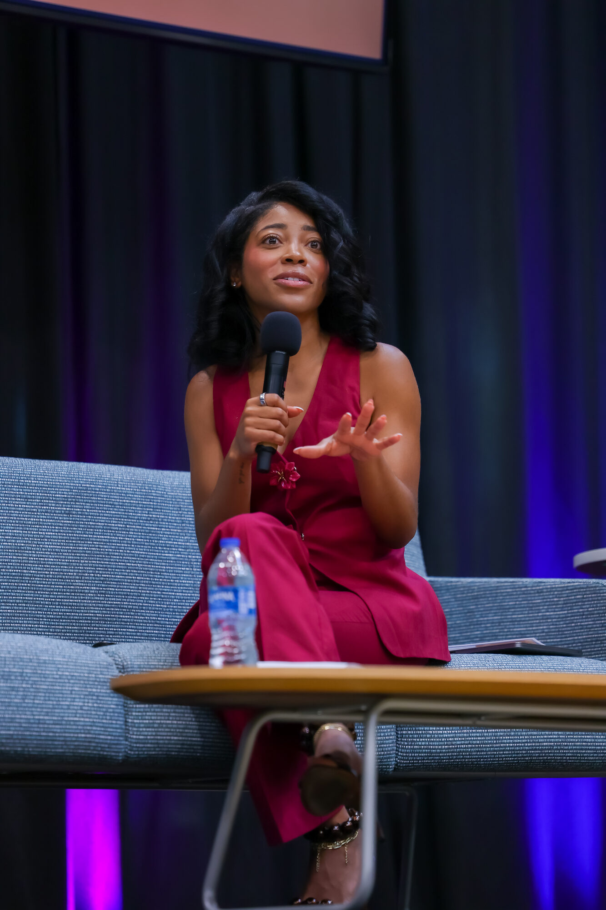
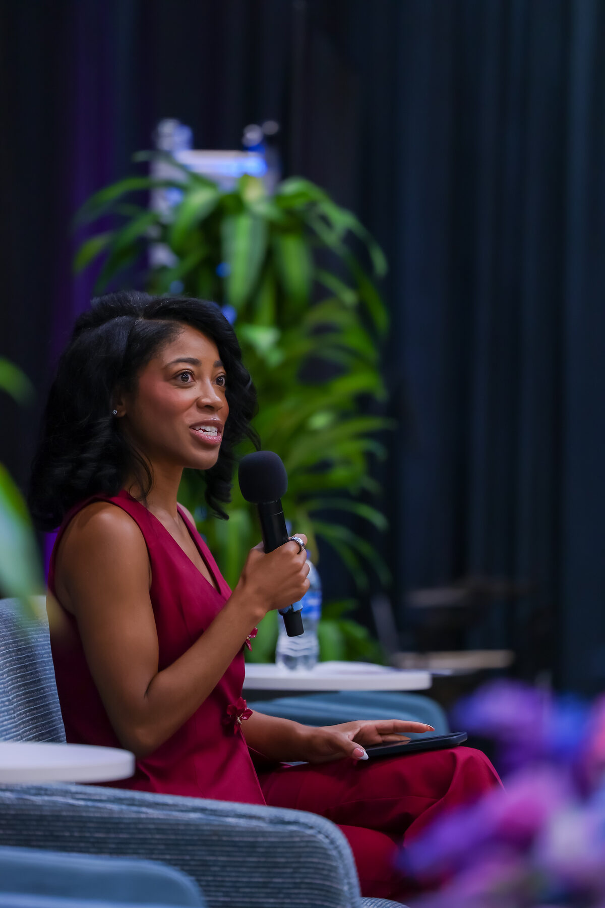
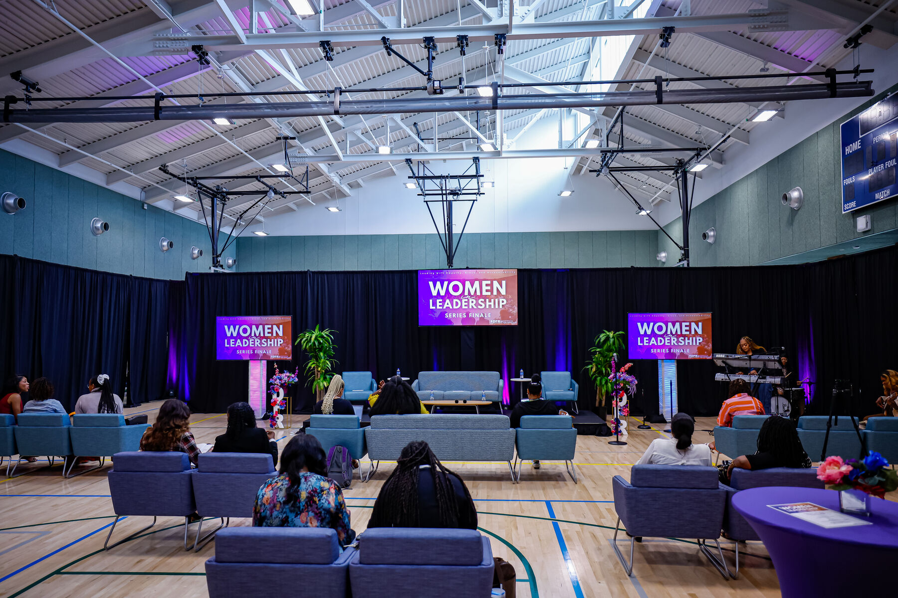
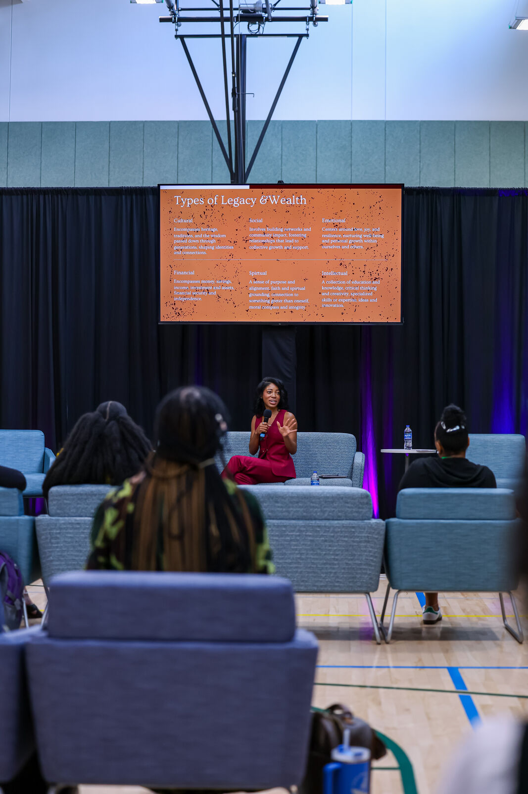
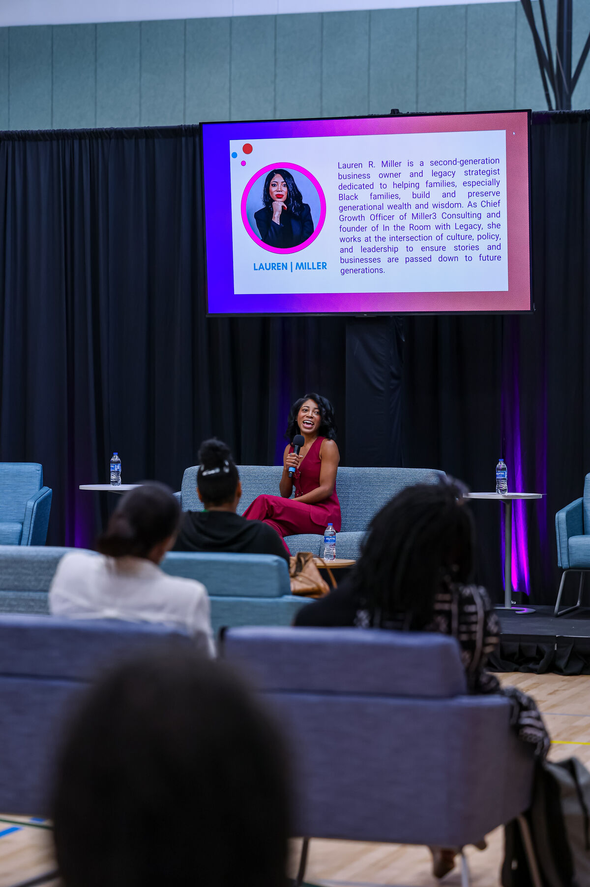
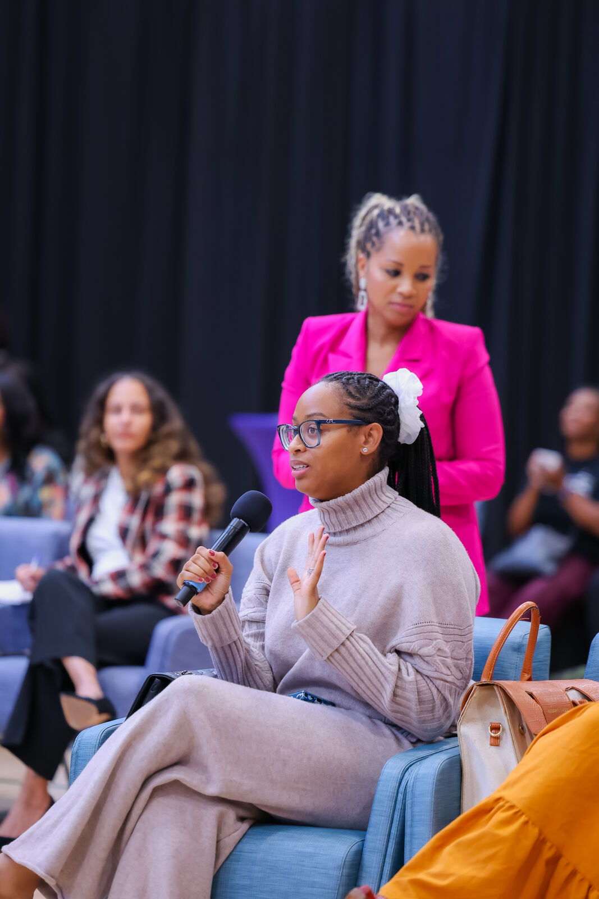

“You are building something whether you know it or not. The question is whether it’s intentional.”

Lauren Rosa Miller is a legacy architect, entrepreneur, and cultural thought leader who helps individuals, families, and organizations move from living by default to building with intention.
A Howard University graduate and 5th generation entrepreneur, Lauren comes from a lineage of landowners and farmers spanning nearly 150 years — including Miller Farms, one of the largest Black-owned farms in the Southeast. She built her first platform, Can’t Stay Put, into a community of 25,000+ and became recognized as a pioneer of the Black millennial movement, earning coverage across Essence, HuffPost, Travel Noire, XoNecole, and Blavity.
When her father became ill, Lauren stepped into the active work of legacy — documenting decades of undocumented institutional knowledge and leading the second-generation transition of Miller³ Consulting, the 35-year procurement and data analytics firm he built. That experience, learned in real time and not in a classroom, became the foundation of In The Room With Legacy, the platform she founded to help individuals and families build legacy with intention before crisis forces them to.
A viral tribute to her late father — viewed 3M+ times — brought national attention to the importance of legacy conversations, earning features on Good Morning America, ABC News, NewsNation, and USPS News. She has delivered a TED-style talk at Harvard Business School alongside her mother to a standing ovation, been featured in Harvard Business Magazine, and shared the stage with leaders like T-Mobile EVP Mike Katz on succession and generational longevity.
Today, as Chief Growth Officer and Co-Owner of Miller³ Consulting — a firm with $20B+ in procurement spend analyzed across 30+ states and 250+ client engagements — and Founder of In The Room With Legacy, Lauren brings a practitioner’s command of what it actually takes to build, run, and transfer something that lasts.

“I didn’t learn succession planning in a classroom. I learned it while my father was ill, the business still had to run, and no one had written any of it down.”Lived experience as credential
Selects from the Women in Leadership keynote series — a fireside-style session Lauren led on identity, wealth, and legacy.




Four flagship keynotes, each adapted for the room — corporate, campus, family enterprise, wealth, or community. See audience-specific menus in the one-pagers below.
Half-day guided experiences, each built for a different room — participants leave with a values framework and a concrete next step.
National broadcast, business, and academic coverage.
A viral postcard tribute to her late father — 3M+ views across platforms and national broadcast coverage on the power of legacy before loss.
TED-style intergenerational legacy talk alongside her mother, delivered to a standing ovation. Featured in Harvard Business Magazine.
“This Heiress Is On A Mission to Help the Black Community Through Succession Planning.” Featured speaker at the Disruptor Summit.
“Black Heirs: How Millennials Are Carrying Family Legacy and Generational Wealth.”
Featured speaker alongside T-Mobile EVP Mike Katz on succession planning and generational longevity.
The postcard story that started a national conversation about legacy, love, and what we leave behind.
Earlier press, from the Can’t Stay Put era — 25,000+ community, Black millennial movement:
“It felt like a sermon. She spoke to things we all knew but had never heard named out loud — about our families, our history, what we’ve been carrying without realizing it was worth something.”Faith community talk, audience response
“Your employees are building wealth — many for the first time in their families. Without intention, that wealth stops with them. Lauren gives them a framework for making it last.”Corporate L&D partner
Five audience-specific one-pagers — each with tailored positioning, speaking topics, and available formats. Pick the room, send the right one.
Keynote (45–60 min), panel & fireside, half-day workshop, corporate retreat, commencement talk, family reunion keynote, faith community talk, and private advisory sessions.